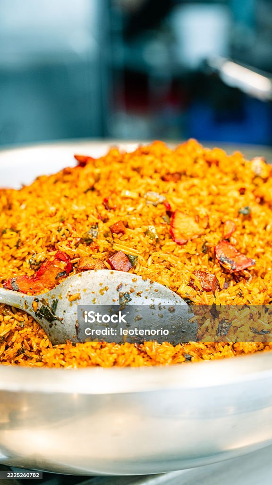

Ancient grains go global
Grains like fonio and teff are showing up on menus and supermarket shelves around the world, valued for being gluten-free and quick to grow.
From the smoky jollof of Lagos to the slow-cooked tagines of Marrakech, discover the dishes, spices and stories behind Africa's kitchens.
Explore recipesAfrica is home to 54 countries and thousands of food traditions. Watch this short introduction to the continent's food culture.
Four signature dishes, four corners of the continent.

West Africa's celebration rice, cooked in a rich tomato and pepper base with scotch bonnet and thyme.
View recipe
A Moroccan stew slow-cooked in a cone-shaped clay pot, fragrant with saffron, ginger and preserved lemon.
View recipe
A spongy, tangy flatbread from Ethiopia and Eritrea, made from teff flour and used as both plate and spoon.
View recipe
A Rwandan favorite of pounded cassava leaves simmered with eggplant, spinach and peanut paste.
View recipeEvery region has its own staples, spices and cooking methods.
What's happening in African food right now.
Grains like fonio and teff are showing up on menus and supermarket shelves around the world, valued for being gluten-free and quick to grow.
Many African dishes have always been built on vegetables, beans and leaves. Home cooks are rediscovering dishes like isombe and misir wot as everyday plant-based meals.
A new generation of chefs is opening restaurants abroad that put West, East and Southern African flavors like suya spice front and center.